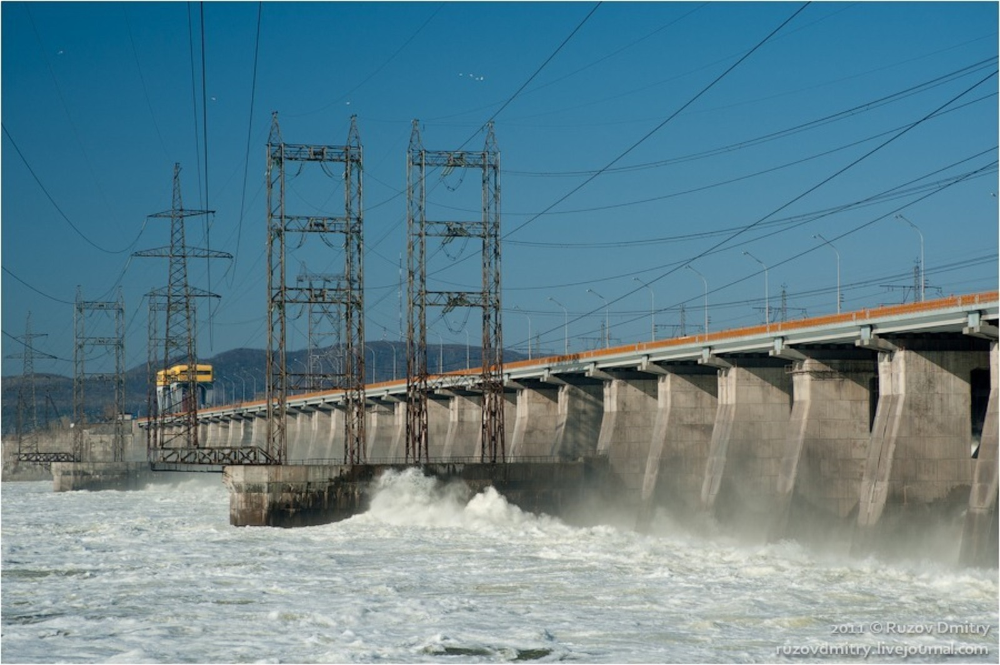

Основы сметного дела

Здравствуйте и добро пожаловать на обучение по программе повышения квалификации: «Сметное дело. ГРАНД-Смета». Меня зовут Ольга Баранова, я эксперт по сметному делу с опытом работы более 20 лет.
С 1 марта 2005 года началась моя трудовая профессиональная деятельность в должности инженера-сметчика. Я прошла путь от рядового инженера до начальника сметно-договорного отдела довольно быстро – всего за 2,5 года. Дальше были разные руководящие должности, много интересных объектов как гражданского характера, так и промышленного комплекса.
Самыми запоминающимися объектами для меня по настоящее время остаются объекты гидротехнических сооружений – считаю их все уникальными рукотворными произведениями, укрощающими стихию, особенно когда начинаешь изучать материалы по их возведению или наблюдаешь за подъемом шандоры, смету на ремонт которой ты составляла, и началом сброса воды… Очень эпично, посмотрите:

В этом курсе я научу вас составлять сметы с учетом всех действующих в настоящий момент нормативных документов, чтобы если податься на госэкспертизу, то с достоинством ее пройти и не бояться отвечать на замечания эксперта (эксперт тоже человек, и чаще даже человечище!). Все примеры по сметному делу подготовлены на основании ПК ГРАНД-Смета актуальной версии (2025.3).
Профессиональное сметное дело требует глубокого понимания строительных процессов, знаний нормативной документации и уверенного владения специализированными программами. Несмотря на активное развитие цифровых технологий ключевой элемент успеха остается неизменным — высокий уровень профессионализма самого сметчика. Именно от его опыта, внимательности и ответственности зависит точность расчетов, надежность сметы и успех проекта в целом.
Можно быть лучшим теоретиком, козырять статьями того или иного приказа, но лучше всего быть практиком – и делать свою работу четко, знать «базу» правовых актов, технологию строительства, очередность технологических процессов и т.д., и быть уверенным в результате своей работы, быть готовым обосновать принятые решения.